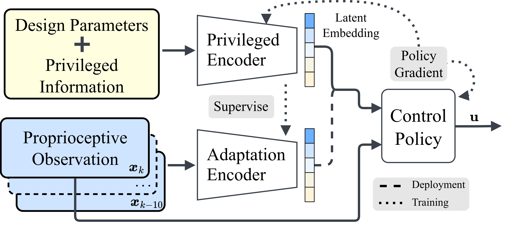
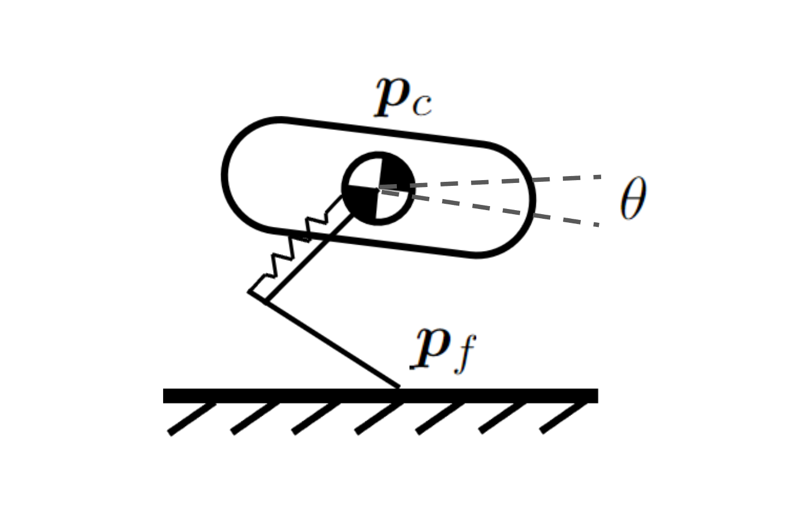
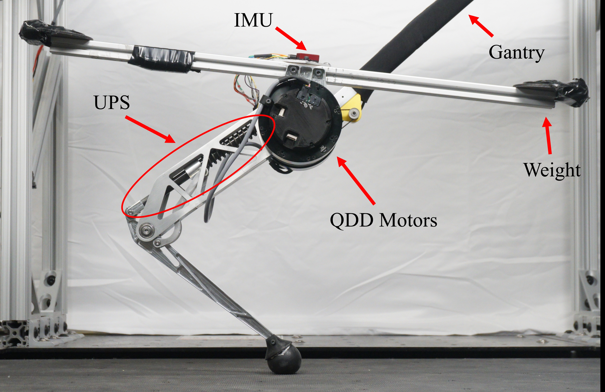

SurGE for MUPS
We test SurGE on MUPS v2, a one-legged hopping robot whose parallel spring can be physically tuned through four design parameters (spring stiffness, engagement length, and two linkage lengths). The goal is to find a spring-and-controller combination that hops at a target height and speed while using as little energy as possible. SurGE refines a hand-tuned starting design into a more efficient one, and the improvement holds up on the real robot: the hopping cost drops 37.65% on hardware, closely matching the trend predicted in simulation.

Architecture of the design-aware policy

The kinodynamic single rigid body model

The Monoped with Unidirectional Parallel Spring (MUPS)

Mechanism animation of the UPS